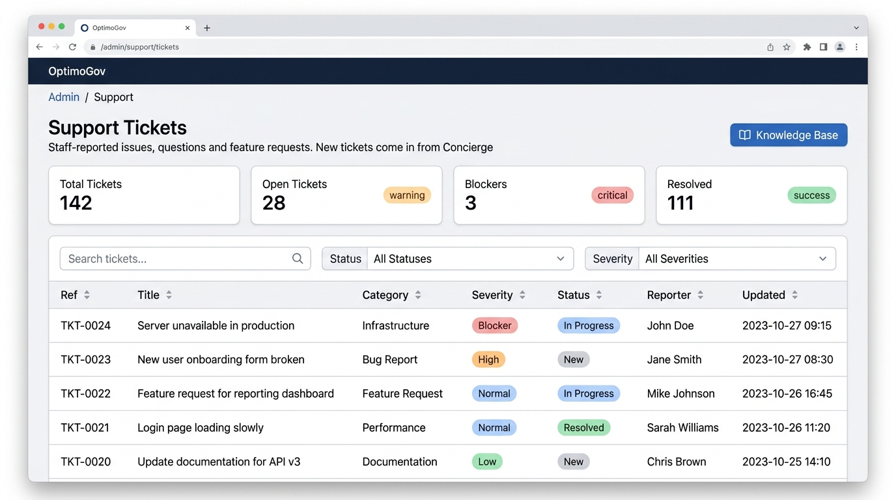

Feature Scope UI Design: Support Ticket Triage Queue
16:9 Retina Master

1. Functional Scope & Triage Engine
- Unified Triage Queue: Filterable table showing ticket ref (TKT-000x), title, category, colored severity pills, status badges, reporter, and SLA timestamps.
- KPI Metric Counter Cards: Top summary counters for Total (142), Open (28 amber), Blockers (3 red), and Resolved (111 green).
- Auto-Context Attachment: Captures active hub, URL, DOM breadcrumbs, console errors, and non-sensitive network failures automatically.
- Threaded Internal & Public Comments: Staff can reply directly to reporters or toggle 'Internal' notes hidden from reporters.
2. SLA Matrix & Status Transitions
| Severity | Respond Within | Resolve Within | State Flow |
|---|---|---|---|
| Blocker | 2 Hours | 24 Hours | New → Triaged |
| High | 4 Hours | 72 Hours | In Progress |
| Normal | 24 Hours | 168 Hours | Waiting on Reporter |
| Resolved | Auto Timestamp | Ticket Closed | Promote to KB |
Attachment & Input Boundaries:
Max 3 screenshots, max 5 attachments (5 MB/file, 15 MB combined). Title capped at 140 chars; description capped at 4,000 chars.